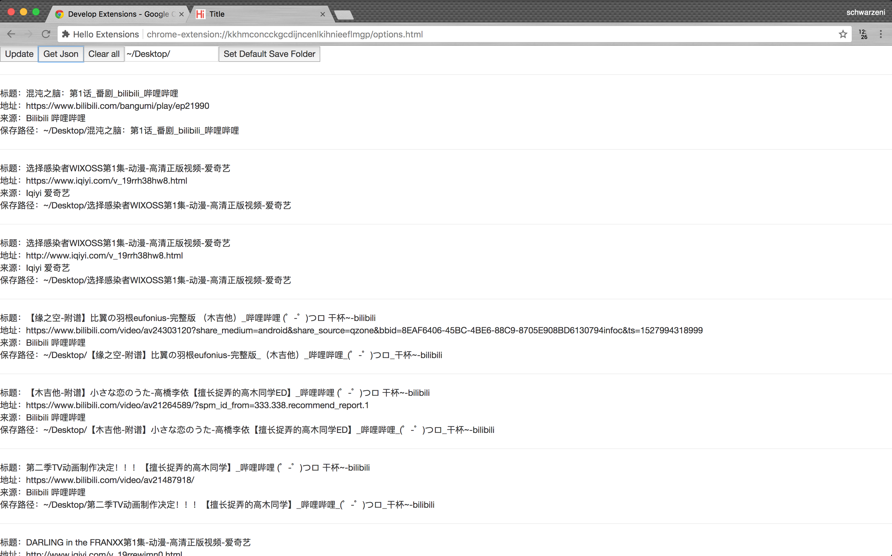
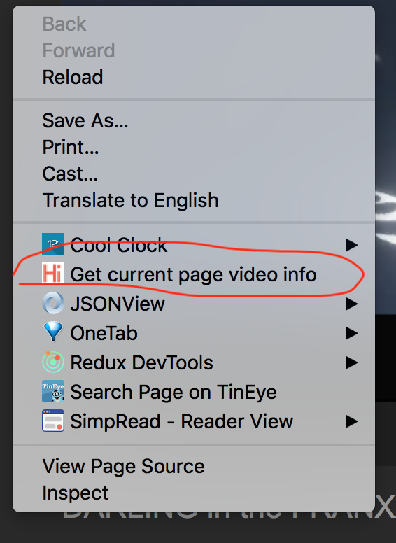
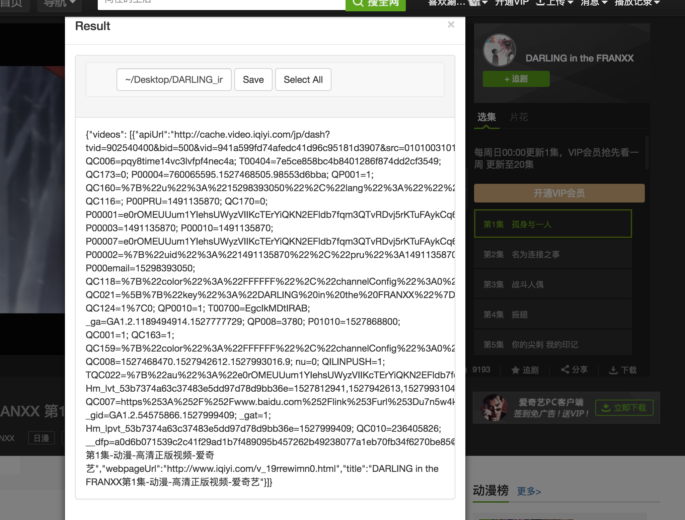
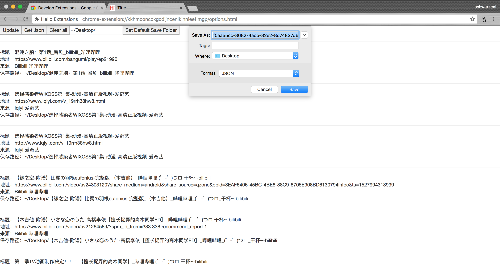

这真的是考研前最后的项目了….
前言
之前写的下载程序有一个很大的缺陷，就是api接口需要自己打开开发者工具抓取，然后自己向配置文件中填写，而且一此只能下载一个网站的视频，也就是parser需要手动选取。
之前已经弃坑的，但是对于不完美的东西不能容忍，而且我有一个想法：自己写一个Chrome插件，自动抓取api接口，自动生成配置文件，本地程序读取之后直接进行下载，不需要手动选择什么parser，最多就是确认一下路径
Chrome插件
着手开始编写Chrome插件！目前使用的是最新版的Chromev66，感兴趣的可以自行查看Chrome开发者文档，上面写的非常详细，还有一个 User Guide 项目，手把手教你编写第一个插件
何为Chrome插件
项目写下来，我的理解是：使用Chrome浏览器提供的一系列api，使用进行javascript编写的，在Chrome后台运行的脚本
抓取视频插件的逻辑
以下列举一些项目中使用到的api
- 在配置文件manifest.json中配置
options_page注册插件配置页，效果如下

使用接口
chrome.runtime.openOptionsPage和chrome.runtime.getURL实现对options页面的打开使用接口
chrome.webRequest.onSendHeaders.addListener监听http请求，抓取需要的请求使用接口
chrome.contextMenus.create和chrome.contextMenus.onClicked.addListener设置右键菜单的内容，效果如下

- 使用接口
chrome.tabs.executeScript向页面嵌入脚本，可以提供预览抓取内容的预览与保存路径的设置

使用接口
chrome.runtime.onMessage.addListener和chrome.runtime.sendMessage实现后台运行的不同脚本之间的信息交互使用接口
chrome.downloads.download实现对生成的json文件的保存，效果如下

项目开发建议
如果是逻辑比较复杂的建议使用typescript，分文件进行编写，最后使用webpack编译打包，对于页面的呈现，建议使用一个前端UI框架
一些心得
对于将数据写到本地文件中，可以使用javascript的Blob对象生成一个url，再使用chrome的下载api进行下载，如下
1 | let blob = new Blob(["Hello world"], {type: "plain/txt"}) |
对与使用chrome.runtime.onMessage和chrome.runtime.sendMessage进行信息的交互，建议使用typescript规定特定的格式，这样子项目复杂起来之后就不会乱了
最后
到这里彻底弃坑，全面备战考研！！